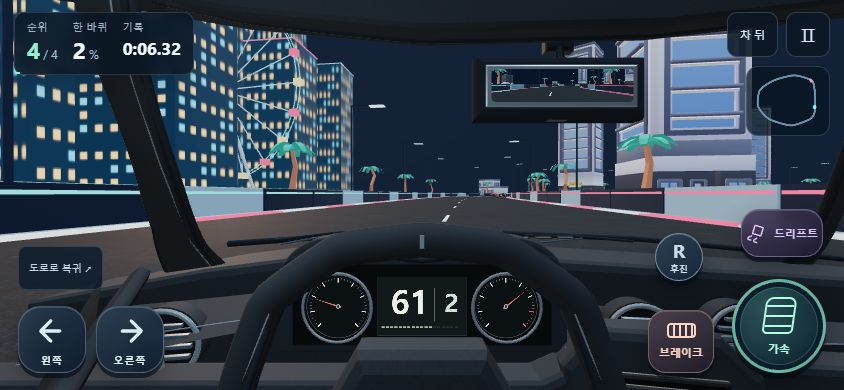
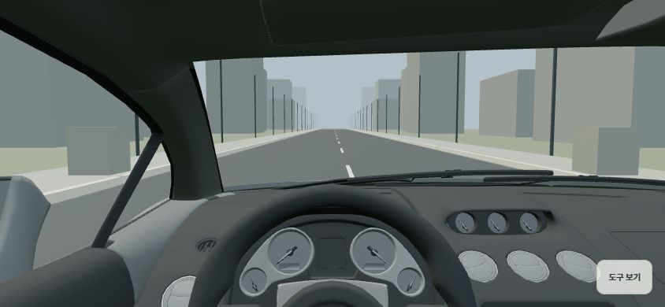
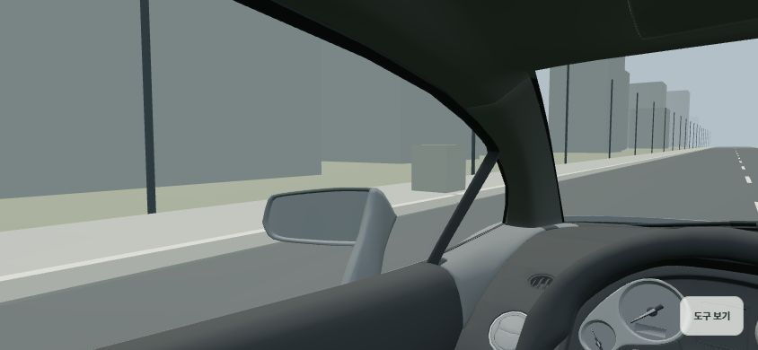
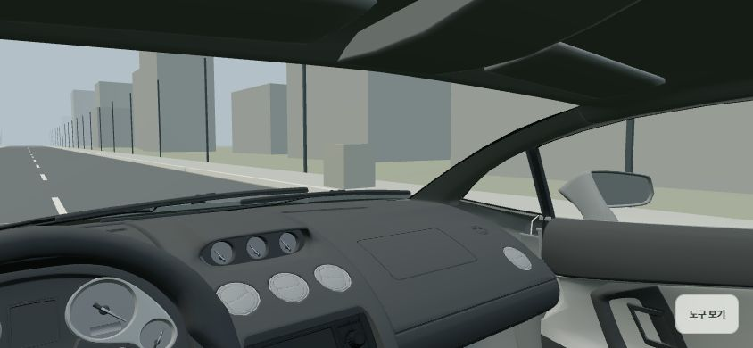

DREAM GARAGE · COCKPIT STUDY
실내에서 직접 둘러보기 →운전석 공간 비교
실제 게임 화면과 Gallardo 원본을 이용한 새 시안입니다. 새 시안은 부품 크기를 고정하고 눈 위치·시선·시야만 조절합니다. 조명과 조작 UI가 달라, 질감보다 실내의 큰 형태와 깊이를 비교해 주세요.

기존 게임 · 참고 형상으로 만든 실내
화면에 맞춰 조정한 핸들과 계기판, 평평한 대시보드가 중심입니다.

새 시안 · 원본 부품의 공간 관계
같은 실내 안에 놓인 문·필러·천장·계기판과 핸들을 왼쪽 좌석에서 봅니다.
비례를 먼저 고정모든 부품에 같은 배율과 축 변환을 적용했습니다. 화면 회전 때 핸들이나 필러를 따로 줄이지 않습니다.
눈과 시선을 분리좌석의 높이·앞뒤 위치와 시선의 기울기·시야각을 각각 비교합니다. 가로 화면에서 좌우 실내를 보기 좋습니다.
이번 검토의 범위중립 재질과 짧은 가속·제동 재생입니다. 원본은 미완성 모델이며, 실시간 미러·작동 계기·본 경주 연결은 후속 단계입니다.

왼쪽 · 가까운 문과 필러
